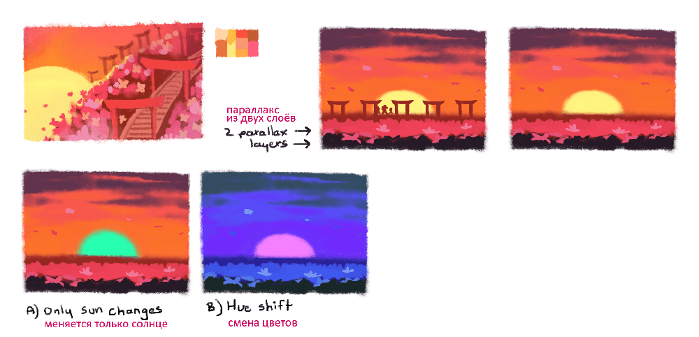
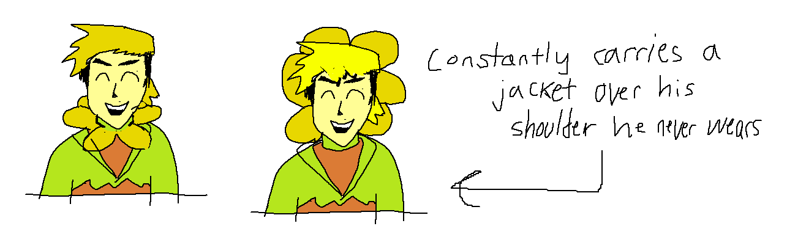
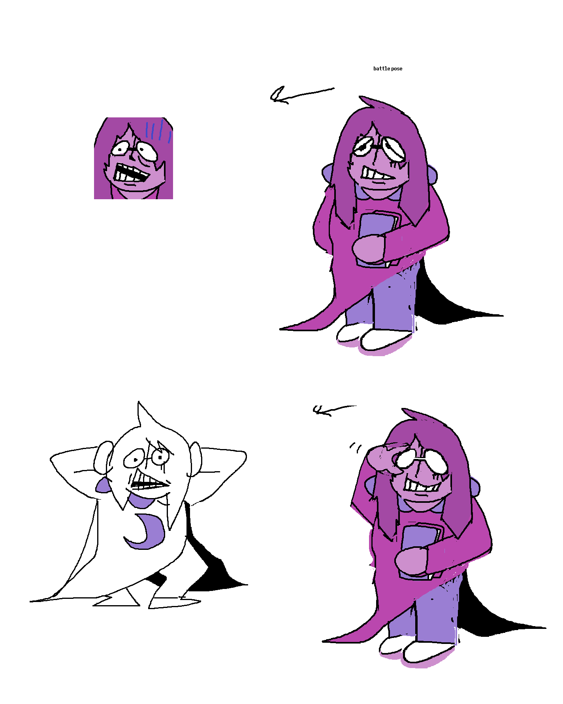
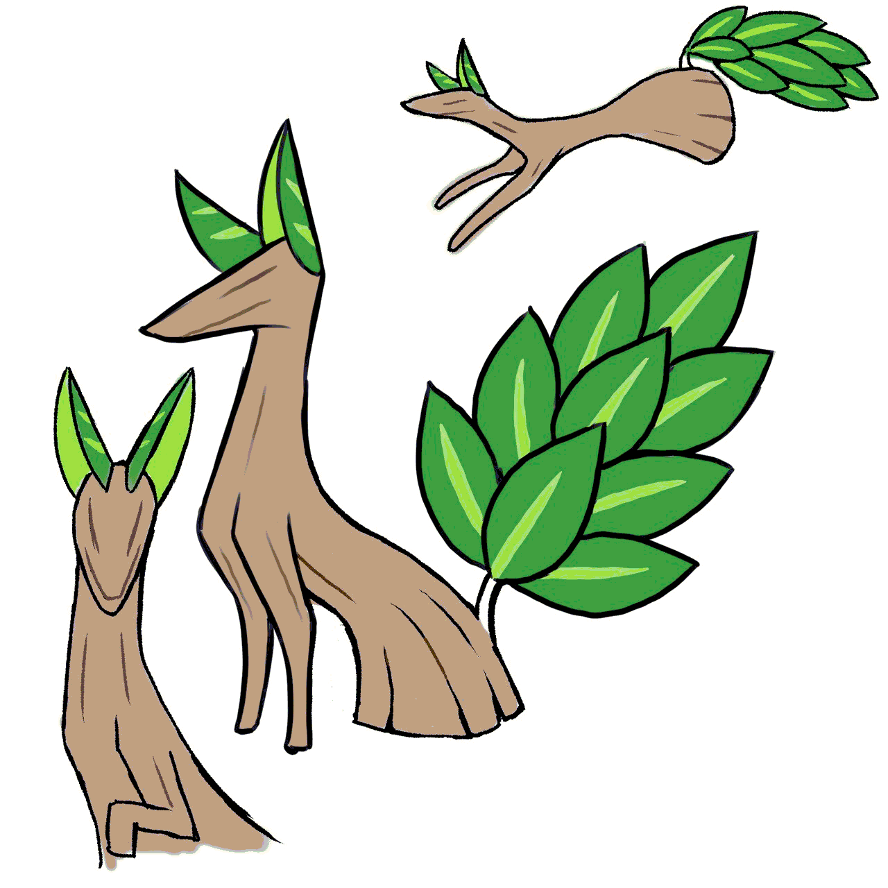
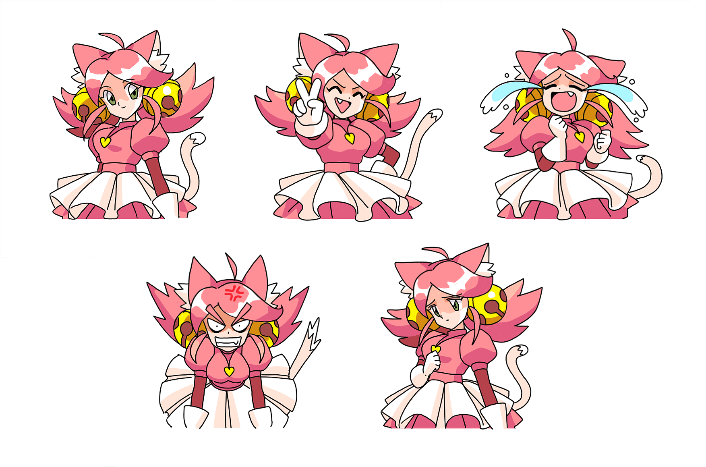
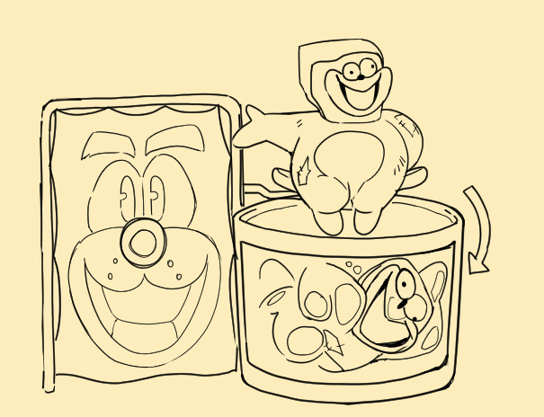

МЫСЛИ О ГЛАВЕ 5
{kind=link}

Поговорим о Главе 5...
КОНЦЕПТ И ИГРОВОЙ ПРОЦЕСС
В преддверии релиза я назвал Главу 5 «весёлой». Надеюсь, все, кто уже успел в неё поиграть, поняли, что я имел в виду. (Что глава весёлая.) В общем, главы с персонажами — чудаковатыми жителями мира тьмы, любящими быть в центре внимания и потенциальными победителями всяких странных конкурсов популярности, мы точно закончили. Но, с оглядкой на всю структуру сюжета DELTARUNE, я считаю, что именно такой персонаж подходил здесь лучше всего.
Хотя с Главы 1 прошло всего четыре главы, мне хотелось, чтобы Глава 5 совместила новые концепции с нотками весёлой ностальгии. С музыкой из первой главы, с персонажами по мотивам идей из UNDERTALE… и т. д.
Что касается новых элементов, то в этот раз мы впервые внедрили платформерную систему, в которой можно прыгать, атаковать и выполнять ДЕЙСТВИЯ. Разработка началась в октябре 2021 года по инициативе Ondydev’а (создателя игр, таких как Tres-Bashers). Работа над системой шла с переменным успехом, а затем, на финальном этапе Главы 4, другие члены команды подхватили прототип Онди и продолжили его развивать.
Ранний пример платформенной части от Онди с его собственными вре́менными врагами.
Как обычно, не обошлось без огромного количества прототипов. Вместе с платформерной системой также возникло несколько важных дизайнерских вопросов. Я вполне доволен тем, как система реализована в финальной версии, однако в момент разработки некоторые вещи требовали особого внимания…
Мы создали прототипы атак для цветов каждого цвета, но далеко не все попали в игру.
- DELTARUNE — это скорее RPG с упором на взаимодействия между персонажами. Если бы мы полностью превратили игру в платформенный экшен, игроки бы начали думать «Почему я играю в $#&! подобие Hollow Knight?», вместо того чтобы получить привычные ощущения от игры.
- Чтобы платформерная часть отражала в себе уникальное поведение персонажей, в октябре 2024 года мы добавили к ней систему ДЕЙСТВИЙ. В арсенале каждого персонажа предполагалось множество вариантов ДЕЙСТВИЙ, но в итоге мы решили, что логичнее всего оставить только «Свисание» для Ральзея и «Ярый взмах» для Сьюзи.
- Также по канонам DELTARUNE в режим платформера была добавлена куча глупых опциональных диалогов в качестве реакций на разные штуки. По этой же причине в этот сегмент мы добавили несколько стычек в RPG-формате, чтобы не слишком отдаляться от основной игры.
- Ещё нам пришлось учесть, что для кого-то это может стать первым платформером в жизни. (Страшная мысль, но и такое может быть.) До этого момента игра не требовала никаких навыков платформинга, и поэтому мы постарались сделать зоны с прыжками максимально простыми. С другой стороны, делать сложные участки было слишком интересно, так что мы добавили несколько испытаний на сложность в необязательных зонах. Надеюсь, они вам понравились.
Среди наших прототипов были разные головоломки, завязанные на переключении между двумя стилями игры… но большинство из них получились странноватыми и не очень интуитивными.
Помимо создания платформера была ещё одна важная задача: ввести в историю сразу восемь разных персонажей, при этом не создав просадок в повествовании. И, если не разбирать удачность или неудачность самой затеи... я чувствую, что вполне с ней справился, раскрыв каждого из цветов и не нарушив темп истории. У моих друзей любимые цветы оказались разными, и при этом каждый из цветов был чьим-то фаворитом, так что большего я и желать не мог.

ПЕРСОНАЖИ: ЦВЕТИКС
{kind=link}

Десять лет назад на англоязычных сайтах все постоянно писали имя Flowey как Flowery, и меня это бесило. Тогда я подумал: «А может, реально сделать ещё одного персонажа — золотого цветка по имени Flowery? Тогда бы все постоянно путали его с Flowey».
Теперь золотой цветок («Золотой») получил возможность стать собственной версией «Мэри Сью» (нереалистично успешного персонажа без недостатков) в образе «Цветикса». Он пытается быть «идеальным»... но не имеет никакого представления о том, что это значит на самом деле. Его видение «идеального человека» не имеет ничего общего с реальностью. Он выглядит как типичный чувак из аниме, а ещё он намного выше обычного человека. Вполне вероятно, он сам выбрал себе музыкальную тему и проигрывает её каким-то образом… Кстати, эта самая тема — кривая пародия 8‑секундного отрывка из темы Full H**se. Он, видимо, думает, что это круто.
Примерно так же можно охарактеризовать и других персонажей-цветков. Их дизайн может показаться странным, но это потому, что они сами выбрали, кем хотят быть. Интересно, что послужило поводом их «мечтаний»?.. (Если честно, это не так важно, но задуматься над этим любопытно.)
Я очень надеюсь, что это всё не было для вас новой информацией. Я просто указал на то, что было в игре.
Кстати, вот концепт-арт от аниматора Токо Ятабэ из Studio Khara! (Её дизайн определил окончательный вид Цветикса!)

В разных ситуациях он выглядит по-разному. Мне нравится, когда у персонажей непостоянный дизайн. Особенно у таких, как он. Возможно, он и сам в этом виноват.
ДРУГИЕ ЦВЕТЫ
Вот примеры концепт-артов остальных цветов.

АКВА. Нарисовать её было несложно. Думаю, не секрет, что она во многом вдохновлена Touhou. Кстати, я один раз болтал с одним человеком, и когда оказалось, что он не знает про Touhou, я сказал: «Ну, которая Bad Apple?», — на что мне ответили: «А… мне казалось, это про Хацунэ Мику…» Она ж её даже не поёт…
{kind=link}

СЕТ. Этот цветок как именем, так и дизайном вдохновлён персонажем из игры Illusion of Gaia. Оба фиолетовые и носят очки, но на этом сходства, в общем-то, заканчиваются... Изначально планировалось сделать более серебристый оттенок волос и кожу цвета лаванды, но друзья мне сказали: «Ну… м-м-м… это же, ну… буквально из „Вселенной Стивена“», — и тогда пришлось менять.

ЗЕЛЛИ. Рисовка Зелли вдохновлена стилем моей подруги splendidland — дизайнера Хакера, Колекаря и ещё нескольких крутых ребят. Правда, она узнала об этом персонаже только уже после выхода игры.

ОРАНЖ. Непросто было в настолько маленьком спрайте передать всю радость в её улыбке. Ну вы посмотрите на неё... В общем, мне было важно сделать одного из персонажей мышью, чтобы показать, какое напрочь абсурдное у цветков представление о человечестве.
{kind=link}
{kind=link}
ЖЁЛТЫЙ. У него было два варианта дизайна. Более ранний датируется октябрём 2016 года: у него была борода и в целом образ такого классного, собранного чела. Потом, в январе 2020-го, я его перерисовал. Он отчасти вдохновлён Вуди из «Истории игрушек». Ещё о нём намекнула некая занавеска в 3-й главе, и этим, кажется, ограничивается список намеренных ковбойских намёков, которые я делал за всю свою жизнь.

СИНИЙ. Вы могли заметить, что в диалоговых портретах у него другая причёска. Как по мне, интересно, когда можно изображать одного и того же персонажа разными способами.
ЕЩЁ ДИЗАЙНЫ ВРАГОВ?!
На дизайн рядовых врагов мы пригласили двух художников.
NELNAL. Nelnal сделала дизайны аж для четырёх врагов: Жужжиндзи, Тэракоты, горшка-лучника и богомола-танцовщицы. Но в итоге только два из них оказались врагами... по крайней мере, в этой главе.
{kind=link}
{kind=link}
{kind=link}
ХИТОСИ АРИГА. Хитоси Арига — известный японский художник, работавший над мангой Rockman Megamix, а также подаривший дизайны множеству покемонов (например, ныне полюбившимся Снизлеру, Флаттер Мэйну и Огерпону). Но знали ли вы, что он также ответственен за спрайты персонажей из многих классических игр, включая некую Illusion of Gaia?!
В общем, он сделал наброски лисицы, а я немного изменил их и добавил в игру.
{kind=link}

А ещё его семья и он сам очень классные и добрые!!!
ПРИГЛАШЁННЫЕ МУЗЫКАНТЫ?!
В этот раз нам много кто помог с музыкой.
Garden of Hopes and Dreams — Карлос Ини. С трудом верится, но этот чувак ещё в школе создал свой альбом джазовых аранжировок по трекам из UNDERTALE. Я очень рад, что его музыка теперь есть в игре!
Rakuichi Buster — rakuichi. Этот трек уже был использован в одном из ранних трейлеров DELTARUNE... но теперь, как мы добавили «украшенный» вариант Field of Hopes and Dreams, захотелось добавить и «украшенную» музыку для битв.
Cutie Mew Mew Magic — Camellia. Для этой песни я составил коротенькую демоверсию, записал несколько минут фортепиано и вокала и выслал Камелии. А ещё описал ему это всё текстом. Всё остальное он делал уже сам, лол. То, что я скинул Камелии, было чиптюновой версией с шестью секундами отсюда + наброском мелодии. Здесь я её чуть доделал, чтобы это можно было слушать, не за что, обращайтесь.
Flower Man — Camellia. Сколько раз я пытался написать эту песню самостоятельно, со сколькими людьми перепробовал записать полноценную версию с вокалом... но всё было не то и сэмплы мои не подходили. В итоге я жалобно просил Камелию сделать финальную аранжировку. Ниже — самый ранний набросок песни на фортепиано:
I Think I’m In Love / DELTARUNE Logo — itoki hana. Я составил набросок песни, она сделала аранжировку, потом я всё это смешал и добавил своих инструментов. Логотип, кстати, вдохновлён визуальной вставкой из второго сезона «Сейлор Мун».
ПРИГЛАШЁННАЯ ХУДОЖНИЦА?!
А ещё одна из авторов игры Fields of Mistria, Клэр, нарисовала диалоговые портреты Розы и её спрайты для локаций! Мы с ней давние друзья, она очень сильно мотивировала меня довести UNDERTALE до конца, и я был крайне рад её участию в Главе 5!
{kind=link}

Ок пока!
{kind=link}
